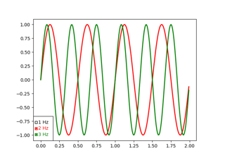
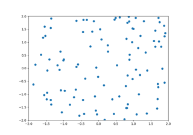
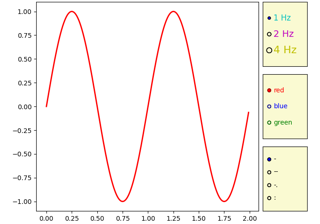
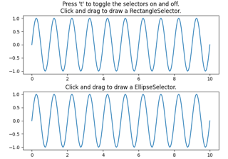

Widgets#
Examples of how to write primitive, but GUI agnostic, widgets in matplotlib



Check buttons

Cursor


Select indices from a collection using polygon selector
Select indices from a collection using polygon selector


Radio Buttons


Rectangle and ellipse selectors
Rectangle and ellipse selectors